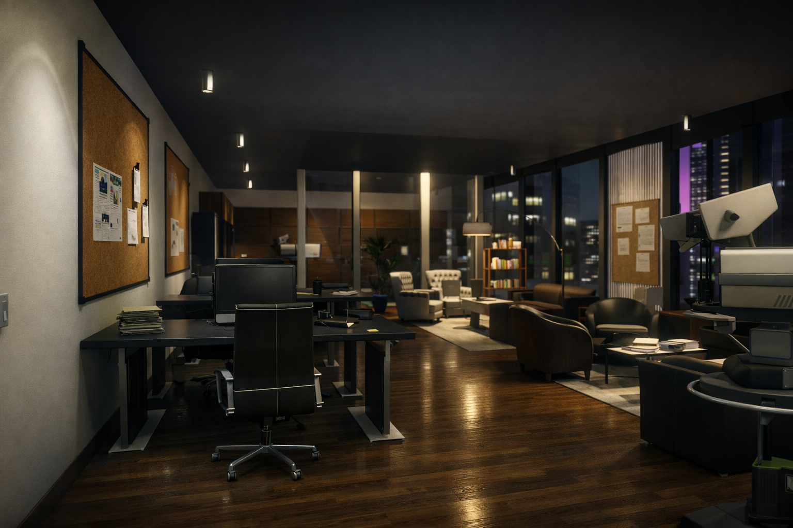

ORIGIN STORY
Fondé en 2030 sur les ruines de l'ancien Weazel News, FROST NEWS est né d'une nécessité : offrir aux citoyens de San Andreas une information pure, sans filtre corpo ni censure d'État.
Nous utilisons des algorithmes de vérification décentralisés pour garantir que chaque mot publié est factuel. Nos serveurs sont situés dans des eaux internationales pour échapper à la juridiction du FIB.
NOS PRINCIPES
- Indépendance financière totale
- Protection absolue des sources (Chiffrement AES-512)
- Neutralité politique stricte
